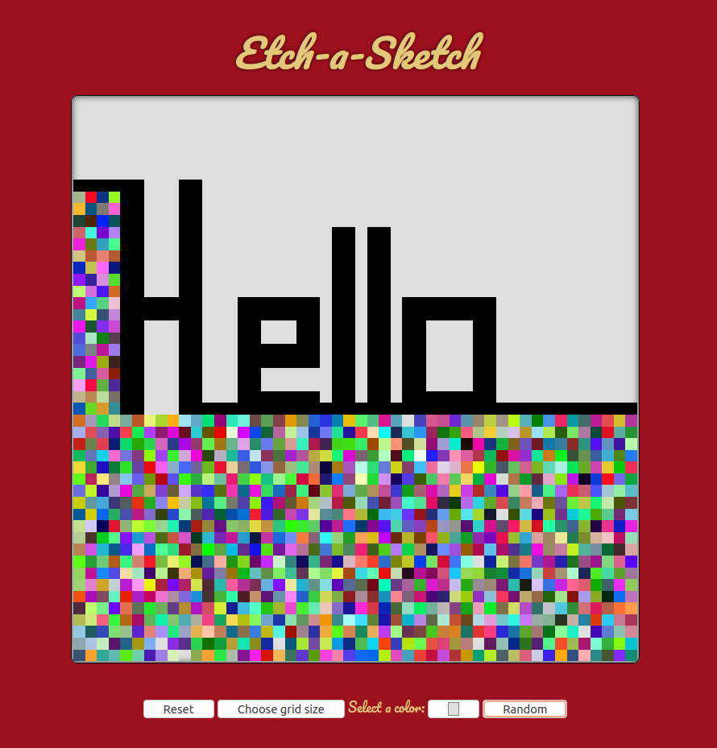

Projects

Rock, Paper, Scissors
Brief description of project

Etch-a-Sketch
Brief description of project
Osiris Rex
Brief description of project

Calculator
Brief description of project
Write some stuff here.
BS in Computer Science, with Honors
Brief description of project
Brief description of project
Brief description of project
Brief description of project
Swing dancing, piano, reading, crafting, video games, baking, dogs, kayaking, pumpkin carving, travel